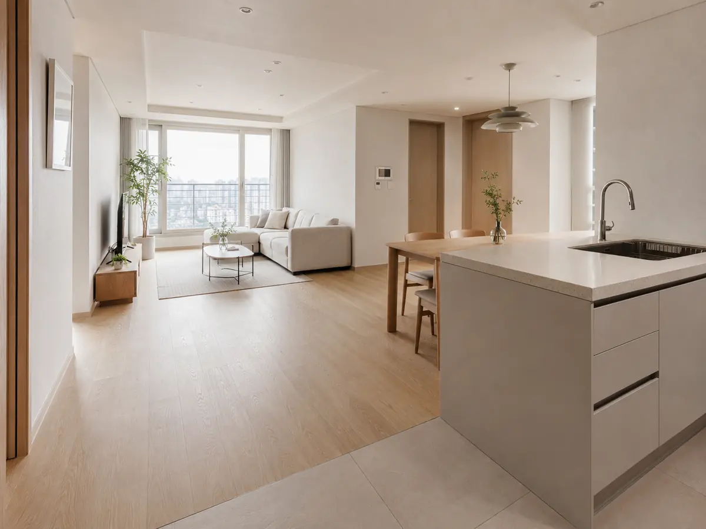
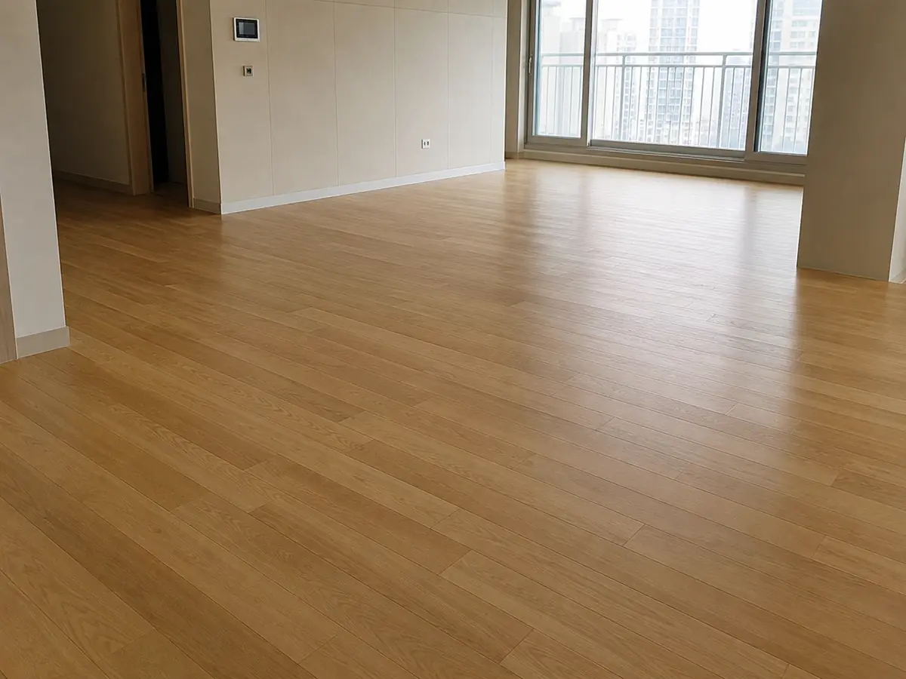
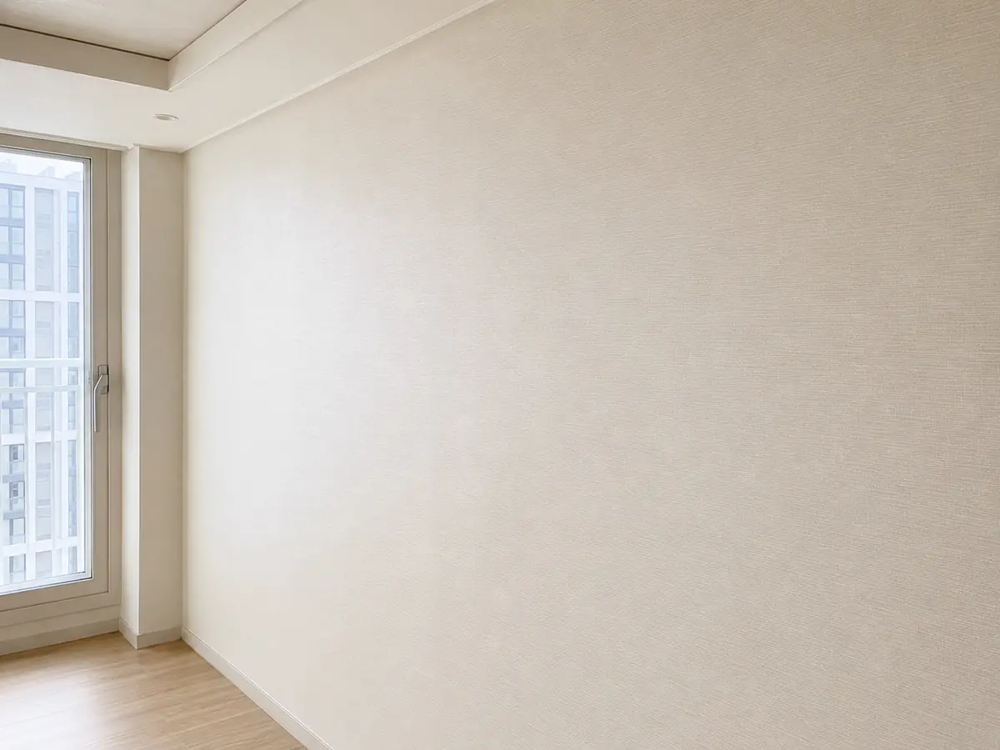
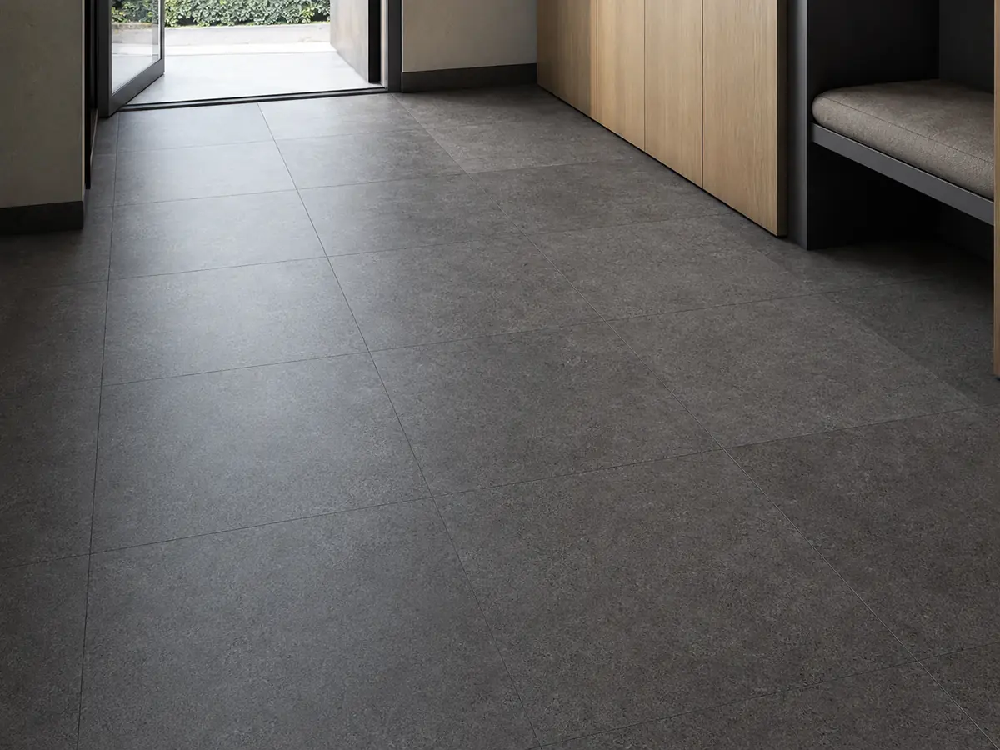
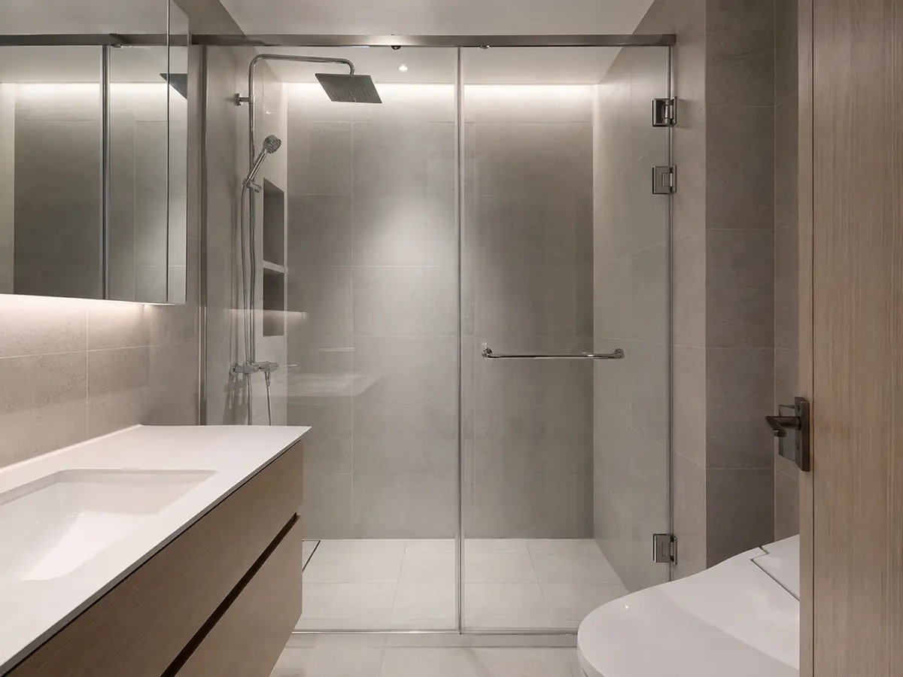
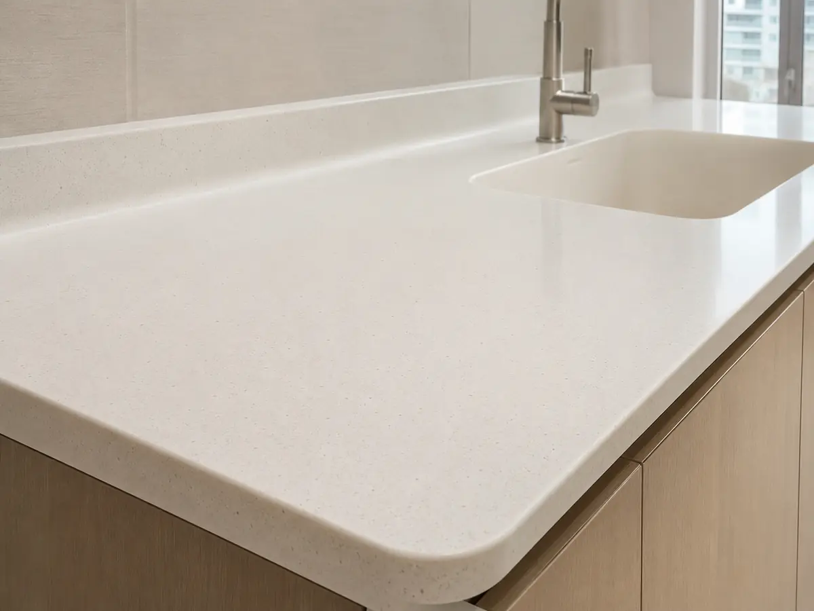
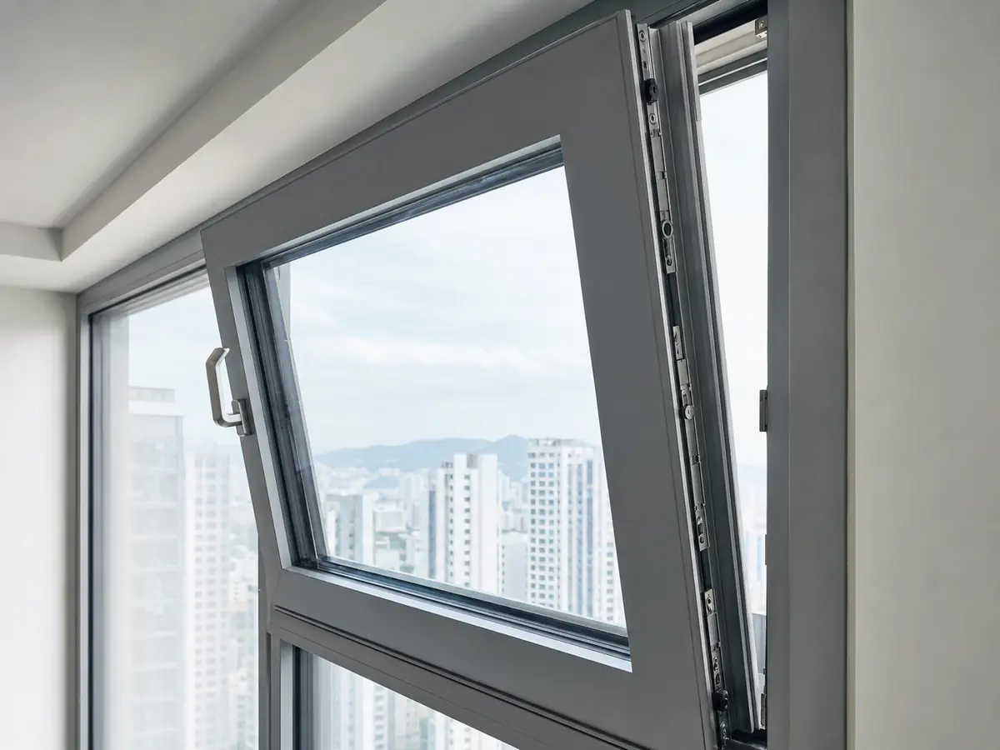
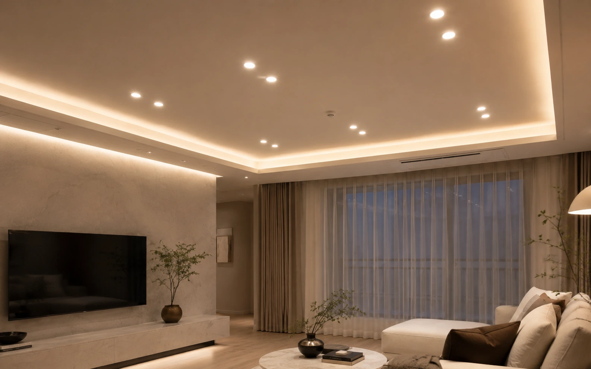

인테리어 자재와 계약 기준
바닥재·벽지·타일·욕실·주방·창호를 무엇을 기준으로 고르는지, 견적서와 계약서에서 무엇을 확인하는지 다룹니다. 자재별로 시공 방식과 대표적인 하자가 다르므로 항목도 자재에 맞춰 달라집니다.
이 가이드의 가격은 2026년 5월에 확인한 시장 범위입니다. 공식 고시 가격이 아니고, 지역·물량·자재 등급·철거 범위·건물 조건에 따라 달라집니다. 실제 금액은 반드시 방문 실측 견적으로 확인하세요. 확인할 수 없는 항목은 숫자를 적지 않고 무엇을 물어봐야 하는지만 적었습니다.
자재·마감재 가이드
바닥·벽·타일·욕실·주방·창호 등 눈에 보이는 마감재와, 창호처럼 성능이 중요한 자재를 종류별로 비교합니다. 카드에는 그 자재에서 실제로 갈리는 항목만 적었습니다. 상세 페이지에서 선택 기준, 견적 항목, 시공 확인 사항, 하자 처리를 다룹니다.
인테리어 비용·평형별 예산
자재를 고르기 전에 예산 배분을 먼저 봅니다. 평형별·공정별 비용 비중, 턴키·반셀프·셀프의 차이, 견적서에서 빠지기 쉬운 항목을 다룹니다.

바닥재
강마루·강화마루·원목마루·LVT·장판을 단가·내구성·소음·발열 기준으로 비교합니다.

벽지·벽 마감재
실크·합지·뮤럴 벽지와 수성 도장의 차이, 시공 순서와 들뜸·곰팡이 하자 대응을 다룹니다.

타일
자기질·도기질·폴리싱 구분과 사이즈 선택, 떡 vs 본드 시공, 줄눈·코킹 관리까지.

욕실
방수·구배·환기 중심의 욕실 공사 순서와 도기·수전 선택, 누수·곰팡이 하자 예방을 정리합니다.

주방
도어재(LPM·PET·도장)와 상판(인조대리석·엔지니어드스톤 등), 빌트인 전기·배관 조건을 비교합니다.

창호·문
시스템창·이중창의 단열·기밀 등급(열관류율)과 유리 구성, 결로·소음 대책을 다룹니다.

조명
다운라이트·간접조명·레일·펜던트 비교와 색온도(K)·연색성(Ra)·조도(lx), 배치와 회로 설계를 다룹니다.
※ 조명의 타공 위치·회로 분리는 전기·목공 공정에서 확정되므로 조명 가이드를 철거 전에 먼저 읽어 보세요. 전체 예산에서의 비중은 비용 가이드의 ‘전기·조명’ 항목에서 확인할 수 있습니다.
인테리어 업체 선택 가이드
업체를 찾는 단계부터 상담·견적·계약·시공·하자보수까지 소비자가 확인해야 할 순서대로 정리했습니다. 각 단계에서 도움이 되는 상세 글로 연결됩니다.
- 1. 업체 유형 이해종합·전문·직영·플랫폼 등 유형별 책임 범위와 건설업 등록 여부업체 고르는 법
- 2. 업체 찾는 방법시공 실적·포트폴리오 확인, KISCON 등록업체 조회업체 고르는 법
- 3. 상담 전 준비원하는 범위·예산·자재 취향을 사진과 함께 정리비용·예산
- 4. 견적서 비교자재명·규격·수량·단가 4종 분리, 3~5사 동일 조건 비교견적 비교의 정석
- 5. 계약서 확인표준계약서·대금 분할(선금/중도금/잔금)·지체상금 조항표준계약서 & 대금 분할
- 6. 추가공사비·분쟁 예방서면 동의 없는 추가공사 비용 청구 불가를 계약서에 명시계약 체크리스트
- 7. 공사 중 확인방수·배관·전기 등 덮이면 못 보는 공정은 사진·영상 기록욕실(방수)
- 8. 하자보수·사후관리공정별 하자담보기간(도배 1년·마루·타일 2년·방수 3년) 활용하자보수 대응
공식 자료 · 분쟁 조정
표준계약서와 분쟁 신청 창구, 등록업체 조회처입니다.